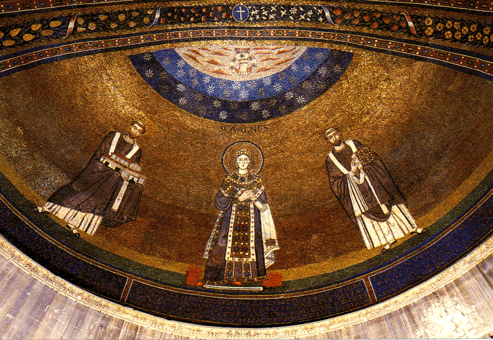

History
H610:
Colloquium in Medieval European History
Medieval
Rome
spring 2007
Ballantine Hall 138
Tu 4-6 pm
Dr. Deborah M. Deliyannis
Office: Ballantine Hall 708
Office Hours: W 1:30-3:30 or by appt.
Phone: 855-3431
email: ddeliyan@indiana.edu
Description
Rome in the Middle Ages (for the purposes of this class, 300-1307) was many things: the seat of the papacy, a relatively large urban concentration of people, a focus of pilgrimage, the former capital of the Roman empire. One can study its monuments, its topography, its social and political history, and the history of its symbolic meaning. This class will serve as an introduction to these various aspects of medieval Rome and the ways that modern scholars study them, through readings in both primary and secondary literature, and consideration of the monuments and archaeology of the medieval city.
Readings
The following books are for sale at the bookstore, and are on reserve in the library:
Krautheimer, Richard. Rome: Profile of a City, 312-1308. Princeton, 2000 (orig. published 1980).
Davis,
Raymond, trans. The Book of
Pontiffs (Liber pontificalis): The
Ancient Lives of the First Ninety Roman Bishops to A.D. 715.
Liverpool University Press, 2001 (first published 1989). Distributed by University of Chicago
Press.
Nichols, Francis Morgan, ed. and trans. The Marvels of Rome: Mirabilia Urbis Romae. Italica Press, 1986 (from 1889).
Various other readings are assigned from books and/or articles which are on reserve in the library.
Course requirements
20% Class participation
20% 2 book reviews (10% each)
20% 2 times leading class discussion (10% each time)
15% Presentation of bibliographic essay
25% Bibliographic
essay
100% TOTAL
Participation
A large part (20%) of the course grade is based on class participation. You are expected to do the reading for each week, and come prepared to discuss it, based both on the study question for the week (if there is one) and on whatever interests you in it. Your participation grade will be based as much (or more) on what you say as how much you say.
Book reviews
Each student will write two book reviews, which will be presented to class (10 mins) on the day listed on the syllabus. Some of the books listed are monographs, and some are collections of essays. The book reviews should be between 1000 and 1500 words long, and should take the format of a scholarly book review (any journal's format may be used). These books have been reviewed, of course, when they were published; I recommend that you NOT look at those reviews when writing your own, but you should, of course, look at reviews of other books to get an idea of the way you might go about it.
Leading class discussion
Each student will be responsible for leading class discussion twice, on dates that will be assigned at the beginning of the semester. For this class discussion, you will be expected to hand out a study question or questions to your fellow students in the class preceding the one you will be leading; this question should form the basis of at least part of your discussion.
Bibliographic essay and presentation
There will also be a 10-15-page bibliographic essay, on a topic of interest to you and related to medieval Rome in some way. A few suggested topics, or suggestions for defining a topic, can be found at the end of this syllabus, but you should write on what is of interest to you.
You must turn in a statement of your topic on Jan. 30, and you must have discussed it with me first (during office hours or by appointment; talking about it before or after class is not sufficient).
A preliminary bibliography for your paper must be turned in on Feb. 27. Some of the materials you may need may not be in our library, and you will be expected to order them from interlibrary loan.
This project will result in a 20 minute presentation in one of the last two class meetings. In the interests of preparing you to give conference papers, I would like you to write up and read your presentation. Part of the preparation will be timing yourself to keep to the 20-minute format.
Tentative schedule
Jan. 9 Introduction: Rome and the Middle Ages
Jan. 16 The origins of medieval Rome
Readings: Ward-Perkins,
Brian. "Continuitists,
Catastrophists, and the Towns of Post-Roman Northern Italy," Papers
of
the British School at Rome 67
(1997): 157-176. PDF
on Oncourse
Liebeschuetz, Wolfgang. "The end of the ancient city." In The City in Late Antiquity, ed. John Rich, pp. 1-49. London: 1992. PDF on Oncourse
Ruggini, Lellia Cracco. "Rome in Late Antiquity: Clientship, Urban Topography, and Prosopography." Classical Philology 98.4 (2003): 366-82. PDF on Oncourse
Marazzi,
Federico. "Rome in
transition: economic and political change in the fourth and fifth
centuries." In Early Medieval Rome and the Christian West: Essays
in
Honour of Donald A. Bullough, ed.
J. M. H.
Smith, pp. 21-41. Leiden:
Brill, 2000. Open Reserves
Barnish,
S. J. B. "Transformation and
Survival in the Western Senatorial Aristocracy, c. A. D. 400-700." Papers of the British School at Rome 56 (1988):
120-155. Wells DG12 .B8 v.65 1997 (note: please
reshelve when you are done)
Book
reports: Lan�on,
Bertrand. Rome in Late
Antiquity: Everyday Life and Urban
Change, AD 312-609.
New York: Routledge, 2000.
pp. 185. Wells DG311
.L3613 2000 out, due 3/28,
recalled 12/21
Jan. 23
Sources
for medieval Rome: The Liber
pontificalis
Readings: Davis, Book of Pontiffs, introduction, text
Davis, Live of the Popes in the Eighth Century and Lives of the Ninth-Century Popes, selections, PDF on Oncourse
Noble, Thomas F. X. "A new look at the Liber Pontificalis," Archivium historiae pontificiae 23 (1985), 347-58. PDF on Oncourse
Study
question: What was the Liber
pontificalis for?
Book
reports: Geertman,
Herman, ed. Atti del colloquio
internazionale Il
Liber Pontificalis e la storia
materiale, Roma, 21-22
febbraio 2002.
Papers of the Netherlands Institute in Rome, 2003.
Deliyannis owns
Jan. 30
Sources
for medieval Rome: itineraries and
ordines
paper topics due
Readings: Mirabilia
urbis Romae
Valentini, R. and
Zucchetti, G. Codice topografico
della cittá di Roma. 4
vols., 1940-53. FSI 81
(1940): 1st-6th c. FSI
88: 6th-11th c. FSI 90-91 (1953):
12th-14th c. ; just have a
look through them to see what is in them and how they might be useful Open
Reserves via interlib
Andrieu,
Michel. Les ordines romani du haut moyen âge. Louvain: 1931. 5 vols.;
just have a look through them to see what is in
them and how they might be useful Wells
BX1999. A57 v. 1-5.
Feb. 6 The big picture, according to Krautheimer, part 1
Readings: Krautheimer, Rome, Profile, chs. 1-5
Feb. 13 The big picture, according to Krautheimer, part 2
Readings: Krautheimer, Rome, Profile, chs. 6-8
Feb. 15: Talk
by Thomas F. X. Noble, sponsored by the Medieval Studies Institute; "'What Became of Rome, Once Mistress of
the
World?' Answers in Text and Monument from
Constantine to Petrarch."
Time and place to be announced.
Feb. 16: T.
Noble meeting with students, to be announced
Feb. 20 The popes and Rome: the early Middle Ages
bibliographies due
Readings: Moorhead, John. "On Becoming Pope in Late Antiquity." Journal of Religious History 30 (2006): 279-293. PDF on Oncourse
Noble, Thomas F. X. The Republic of St. Peter:
The Birth of the Papal State, 680-825.
University of Pennsylvania Press,
1984. Read chs. 1, 2, 6, and
7. Open Reserves
Noble,
Thomas F.X. "Topography,
celebration, and power: the making of a papal Rome in the eighth and
ninth
centuries." In Topographies
of Power in the Early Middle Ages,
ed.
Mayke de Jong and Frans Theuws (The Transformation of the Roman World,
6), pp.
45-91. Brill: 2001. Open Reserves
Book
reports: Richards,
Jeffrey. The Popes and the
Papacy in the Early Middle Ages, 476-752. London: Routledge, 1979.
Open Reserves 4-day
Brandt,
J. Rasmus, ed. Rome AD
300-800: power and symbol, image
and reality.
Rome: Bardi
Editore, 2003. not at IU; must
order interlib
Feb. 27 The popes and Rome: the later Middle Ages
Readings:
Robinson,
Ian Stuart. The papacy
1073-1198: continuity and
innovation. Cambridge:
Cambridge University Press, 1990.
Read chs. 1, 2, and 7.
Open Reserves
Gardner,
Julian. "Patterns of Papal
Patronage circa 1260-circa 1300," in The Religious Roles of the
Papacy: Ideals and Realities,
1150-1300, ed. C. Ryan. Toronto, 1989. Open
Reserves
Book
reports: Twyman, Susan. Papal
Ceremonial at Rome in the Twelfth Century. London: Boydell Press, 2002.
not at IU; must order interlib
McQuillan,
S. The Political Development of
Rome, 1012-85.
Lanham, MD:
University Press of America, 2002.
Open Reserves 4-day
Rom
im hohen Mittelalter: Studien zu den Romvorstellungen und zur
Rompolitik vom
10. bis zum 12. Jahrhundert, ed.
Bernhard
Schimmelpfennig and Ludwig Schmugge.
Sigmaringen, 1992. Open
Reserves 4-day
Mar. 6 The secular inhabitants of Rome
Readings: Noble, Thomas F.X. "Paradoxes and possibilities in the sources for Roman society in the early Middle Ages." In Early Medieval Rome and the Christian West: Essays in Honour of Donald A. Bullough, ed. J. M. H. Smith, pp. 55-83. Leiden: Brill, 2000. Open Reserve
Brentano,
Robert. Rome before
Avignon: A Social History of
Thirteenth Century Rome. University of California Press,
1990. Read chs. 1, 2, 3, and
7. e-book; access through
IUCAT
Book
reports: Esposito,
Anna and Luciano Palermo, eds. Economia e societˆ a Roma tra
Medioevo e
Rinascimento: studi dedicati ad
Arnold Esch.
Rome: Viella,
2005. not at IU; must order
interlib.
Thumser,
Matthias. Rom und der ršmische
Adel in der spŠten Stauferzeit. TŸbingen: M.
Niemeyer, 1995.
Open Reserves 4-day
Spring Break
Mar. 20 The topographies of medieval Rome: abitato and disabitato
Readings: Krautheimer, Rome, Profile, chs. 9-14.
Coates-Stephens,
R. "The Walls and Aqueducts
of Rome in the Early Middle Ages, A.D. 400-1000," Journal of Roman
Studies 88 (1998):
166-178. online at JSTOR
Coates-Stephens, Robert. "Housing in Early Medieval Rome, 500-1000 AD." Papers of the British School at Rome 64 (1996): 239-259. PDF on Oncourse
Santangeli
Valenzani, Riccardo.
"Residential building in early medieval Rome." In Early
Medieval Rome and the Christian West: Essays in Honour of Donald A.
Bullough, ed. J. M. H. Smith, pp.
101-112. Leiden: Brill,
2000. Open Reserves
Book
reports: Hubert,
Etienne. Espace urbain et
habitat à Rome: du Xe
si�ècle à la
fin du XIIIe si�ècle. Rome: Ecole
fran�çaise de Rome: Istituto
Storico Italiano per il Medio Evo, 1990. Open
Reserves 4-day
Mar. 27 The topographies of medieval Rome: religious architecture
Readings:
Ward-Perkins,
John Brian. "Memoria,
Martyr's Tomb and Martyr's Church."
Journal of Theological Studies 17
(1966): 20-37. online;
access through IUCAT
Costambeys,
M. "Burial Topography and the
Power of the Church in Fifth- and Sixth-Century Rome," Papers of
the
British School at Rome 69 (2001): 169-189. Wells
DG12 .B8 v.64 2001
Coates-Stephens, R. "Dark Age Architecture in Rome," Papers of the British School at Rome 65 (1997): 177-227. PDF on Oncourse
Book
reports: Thuno,
Erik. Image and Relic:
Mediating the Sacred in Early Medieval Rome. Rome: L'Erma di Bretschneider, 2002.
Open Reserves 4-day
Apr. 3
Rome
and the World
Readings:
Delogu,
Paolo. "The papacy, Rome and
the wider world in the seventh and eighth centuries."
In Early Medieval Rome and the
Christian West: Essays in Honour of Donald A. Bullough, ed. J. M. H. Smith, pp. 197-220. Leiden: Brill,
2000. Open
Reserves
Schieffer,
Rudolf. "Charlemagne and
Rome." In Early Medieval Rome and the Christian West: Essays in
Honour
of Donald A. Bullough, ed. J. M.
H. Smith,
pp. 279-295. Leiden: Brill,
2000. Open Reserves
Wickham,
Chris. "'The Romans according
to their malign custom': Rome in Italy in the late ninth and tenth
centuries." In Early Medieval Rome and the Christian West: Essays
in
Honour of Donald A. Bullough, ed.
J. M. H.
Smith, pp. 151-167. Leiden:
Brill, 2000. Open Reserves
Book
reports: Birch, Debra
J. Pilgrimage to Rome in the
Middle Ages: continuity and change.
Woodbridge, Suffolk:
Boydell Press, 1998. Wells
at carrel 4-067A
Apr. 10 The end of medieval Rome: Avignon and Cola di Rienzo
Readings:
Dickson,
Gary. "The crowd at the feet
of Pope Boniface VIII: pilgrimage, crusade and the first Roman Jubilee
(1300)." Journal of
Medieval History 25 (1999): 279-307. online;
access via IUCAT
Vita
di Cola di Rienzo. The life of Cola di Rienzo. Translated
with an introd. by John
Wright. Toronto: Pontifical
Institute of Mediaeval
Studies, 1975. Open Reserves
Book
reports: Collins,
Amanda. Greater Than Emperor:
Cola di Rienzo (Ca. 1313-54) and the World of Fourteenth-Century Rome. Ann
Arbor: University of Michigan
Press, 2002. Open Reserves
4-day
Musto,
Ronald. Apocalypse in
Rome: Cola di Rienzo and the
politics of the New Age. Berkeley: University
of California Press, 2003. Open
Reserves 4-day
Apr. 17
student
presentations
Apr. 24
student
presentations
Bibliographic essays due in my office, Tuesday May 1
Ideas for paper topics
The origin and function of the so-called "cemeterial basilica"
The Carolingians and Rome
The use of spolia in Roman architecture
Roman Rome in the Middle Ages (or just one Roman monument)
Monasticism in Rome [narrow it down to a century or two, or to a particular order]
The Roman senate in the Middle Ages
The water supply in Rome [narrow it down to a century or two]
Rome under Theodoric
Burial at Rome in the later Middle Ages
Pilgrimage to Rome [narrow it down to a century or two]
Social backgrounds of popes [narrow it down to a century or two]
The Ordo Romanus and church architecture
The army of Rome in the Middle Ages
Byzantines in Rome [narrow it down to a century or two]
How did the Franks/Anglo-Saxons/Normans/Byzantines/other outside groups perceive Rome?
Rome and the Black Death
Monasticism in Rome
Secular government in Rome [narrow it down to a century or two]
Rome and the Anglo-Saxons
Book report topics and dates
|
Jan. 16 |
Lan�on, Bertrand. Rome in Late Antiquity:
Everyday Life and Urban Change, AD 312-609. New York: Routledge, 2000. pp.
185. Wells DG311 .L3613 2000 out, due 3/28, recalled 12/21 |
|
Jan. 23 |
Geertman, Herman,
ed. Atti del colloquio internazionale Il Liber Pontificalis e la storia materiale, Roma,
21-22 febbraio 2002.
Papers of the Netherlands Institute in Rome, 2003. Deliyannis owns |
|
Feb. 20 |
Richards, Jeffrey. The Popes and the Papacy in the Early
Middle Ages, 476-752. London: Routledge,
1979. Open Reserves 4-day |
|
Feb. 27 |
Twyman, Susan. Papal Ceremonial at Rome in the Twelfth
Century. London: Boydell Press, 2002. not
at IU; must order interlib |
|
Feb. 27 |
Rom im hohen
Mittelalter: Studien zu den Romvorstellungen und zur Rompolitik vom 10.
bis zum 12. Jahrhundert, ed.
Bernhard Schimmelpfennig and Ludwig Schmugge. Sigmaringen,
1992. Open Reserves 4-day |
|
Mar. 6 |
Thumser, Matthias. Rom und der ršmische Adel in der spŠten
Stauferzeit.
TŸbingen: M. Niemeyer, 1995. Open Reserves 4-day |
|
Mar. 6 |
Esposito, Anna and
Luciano Palermo, eds. Economia e societˆ a Roma tra Medioevo e
Rinascimento: studi dedicati ad Arnold Esch. Rome: Viella, 2005. not
at IU; must order interlib. |
|
Mar. 20 |
Hubert, Etienne. Espace urbain et habitat ˆ Rome: du Xe si�cle ˆ la fin du XIIIe si�cle. Rome: Ecole fran�aise de Rome: Istituto
Storico Italiano per il Medio Evo, 1990. Open
Reserve 4-day |
|
Mar. 27 |
Thuno, Erik. Image and Relic: Mediating the Sacred in
Early Medieval Rome.
Rome: L'Erma di
Bretschneider, 2002. Open Reserves 4-day |
|
Apr. 3 |
Birch, Debra J. Pilgrimage to Rome in the Middle Ages: continuity and change. Woodbridge,
Suffolk: Boydell Press, 1998.
Wells at carrel 4-067A |
|
Apr. 10 |
Collins, Amanda. Greater Than Emperor: Cola di Rienzo (Ca.
1313-54) and the World of Fourteenth-Century Rome. Ann Arbor: University of Michigan Press, 2002. Open Reserves 4-day |
|
Apr. 10 |
Musto, Ronald. Apocalypse in Rome: Cola
di Rienzo and the politics of the New Age. Berkeley: University of California Press, 2003. Open Reserves 4-day |